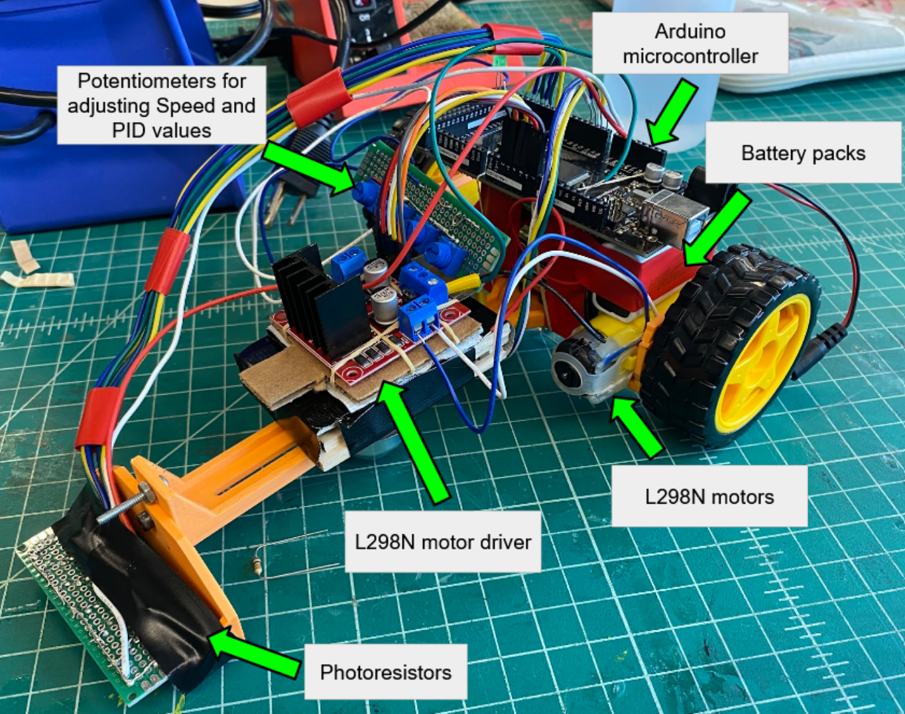

This was our first chassis attempt on our line following robot

A video of our prototype robot following a line
This was our final robot design
This is our final poster

This is our final team photo
PID control is a system of managing an output loop. It stands for Proportional, Integral, Derivative. We chose a P value of XX, an I value of YY, and a D value of ZZ. These values worked best for us due to our long chassis allowing our vehicle to have fast responses to the track. A small P value creates a fast reaction time, which limited our need for a large I value. Our D value was also small, as we did not need to attenuate our small P and I values by much.
We'll discuss that here when we need to.